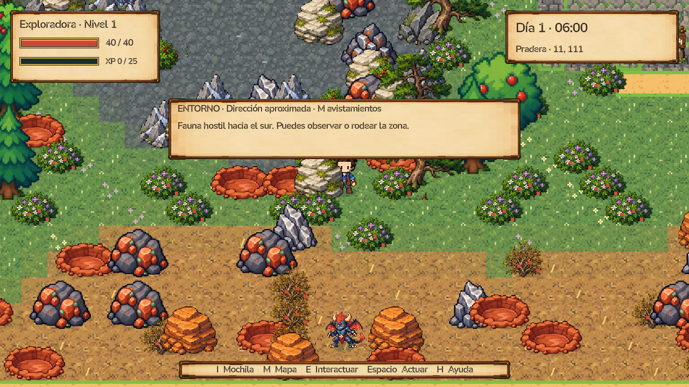
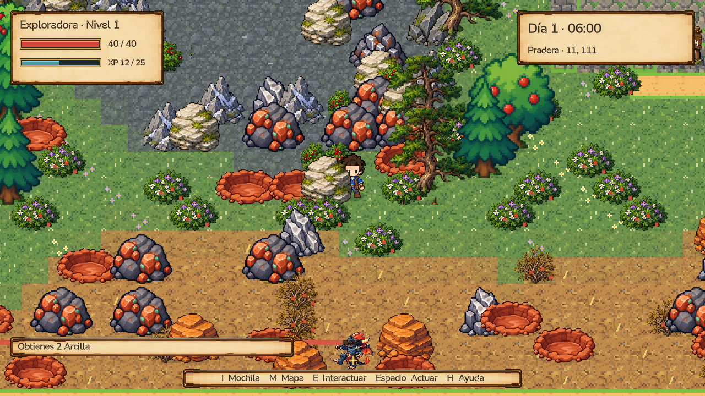
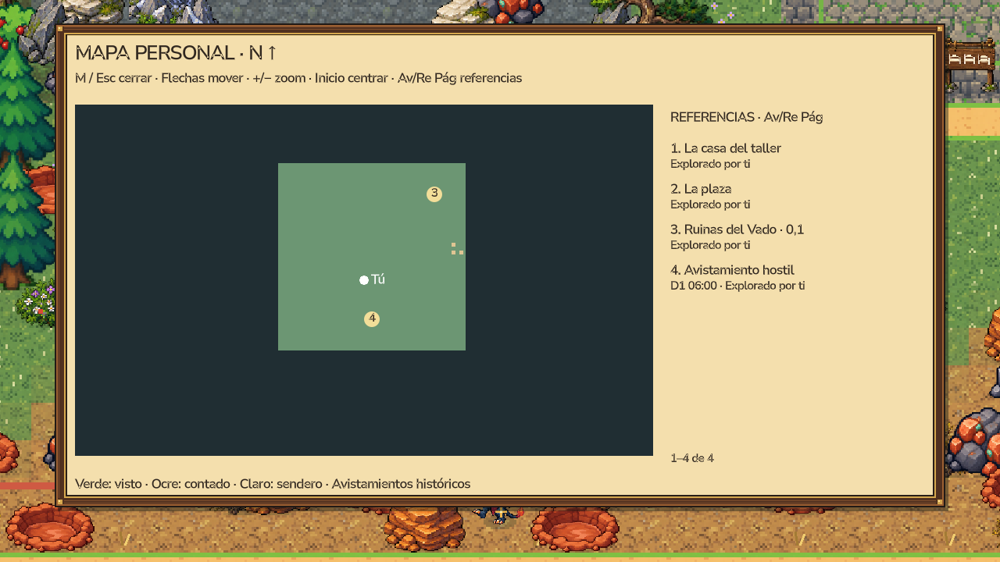
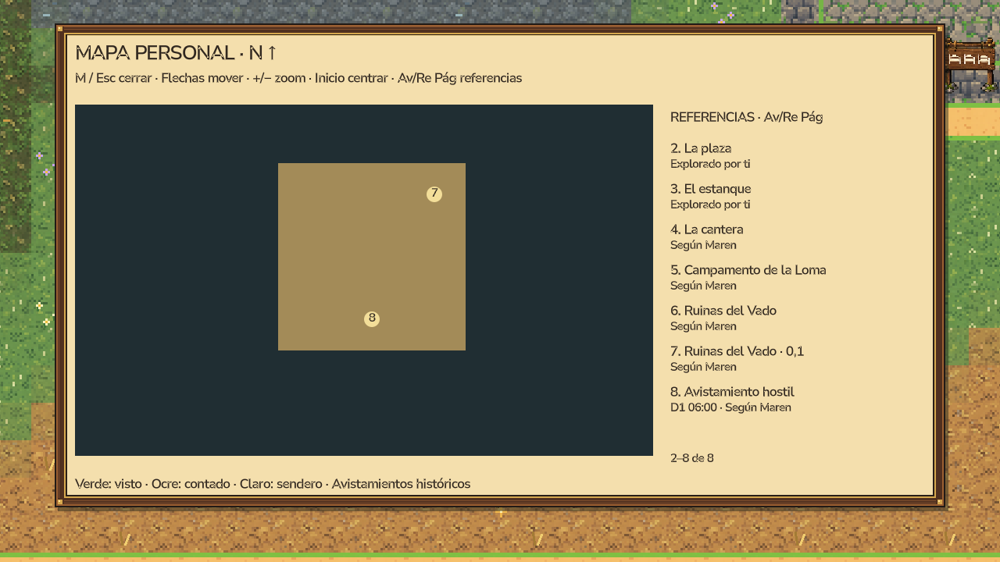

LINDE · FASE 7 · SEÑALES CAUSALES · 26/10/2026Peligro reconocible y recuerdos que conservan su fecha
Capturas reales de Godot a 1280 × 720, con personajes y partidas ficticias. Pulsa una captura para verla completa.
El aviso proviene de fauna viva observada por ese personaje. Usa percepción y visión existentes; no se añadieron radios, daño, misiones ni recompensas. La memoria histórica y los rumores nunca se presentan como una alarma actual.
Presencia observada
Aviso direccional generado desde una criatura regional viva, en el radio de conocimiento existente y con línea de visión.

La amenaza derrotada deja de avisar
La fuente real fue derrotada. El aviso actual desaparece; no se mantiene una alarma ficticia.

El mapa conserva el avistamiento
Área aproximada y fecha, con leyenda histórica. El marcador no sigue la posición de una criatura oculta.

Un NPC transmite un testimonio fechado
Otro personaje recibe el recuerdo mediante la conversación existente. Se distingue lo contado de lo visto por él.

Comprobaciones
20 casos específicos; 16 comprobaciones con dos clientes ENet reales; regresiones de fauna 31 y exploración 13. Guardado, derrota, paredes, alejamiento, movimiento, rumores, privacidad y réplica comprobados. Las identidades internas de criatura/ancla no viajan con la memoria publicada.
No se midió todavía el tiempo de reacción humano ni R/T. No se añadieron huellas gráficas, audio o simulación distante. Rama feature/fase7-ecologia, sin push ni merge a main.